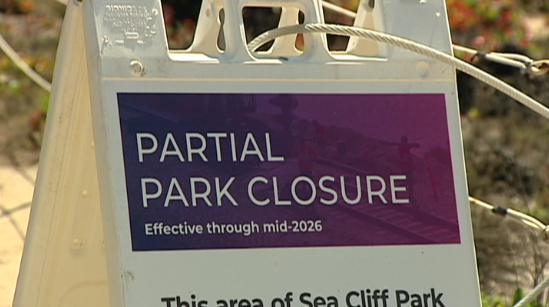

Written by: Rourke Blignaut
Date Written: 6/25/25
The Helen Woodward Animal Center has recently completed its new $15,000,000 education center. The new education center features 4-5 themed classrooms with state-of-the-art technology and 2 playgrounds. Multiple camps will be held in the new building for kids aged pre-k to 6th grade. Now the new education center is for teaching kids about animals and you may be wondering how to get your kid involved, go to "animalcenter.org," and click on the button under "Education Programs" to sign up. So if your kid is looking for something to do, consider the new education programs at Helen Woodward. Also, consider rescuing one of the many animals in need of a home.